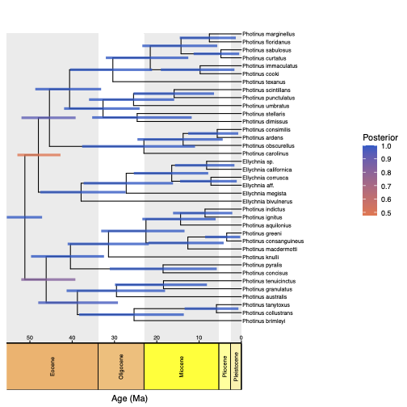

In the previous exercise 1 we inferred the phylogeny of the North American firefly genus Photinus. In this exercise, we will use the previous output to infer a time-calibrated phylogeny assuming a relaxed-clock model.
The first step is to read in the posterior tree samples from the previous analysis.
Here, we assume that we had 50,000 sampled trees (2x an MCMC of 25,000 iterations) in the previous step.
If we want to remove 20% as burnin, that leaves 40,000 samples.
Then, if we want 100 trees, we should take every 400th sample, thus specifying the option thin=400.
Obviously we would like to use as many trees as possible, but this comes at a computational cost (Höhna and Hsiang 2024).
treetrace = readTreeTrace("output/photinus_COI.trees", treetype="non-clock", thinning=400, burnin=0.2)
Let us double check how many trees we have for this analysis. It should be 100 (or 101, if the tree for iteration 0 was included).
treetrace.size(true)
We get the taxon information from the first tree
taxa = treetrace.getTree(1).taxa()
n_species <- taxa.size()
And as usual, we create our vector of moves and monitors.
moves = VectorMoves()
monitors = VectorMonitors()
Here, we assume a uncorrelated lognormal relaxed clock. Thus, we need to specify this lognormal distribution with a mean and standard deviation. Specify a uniform prior on the clock mean
clock_rate_mean ~ dnUniform(0,1E4)
clock_rate_mean.setValue( 0.1 )
Also specify a uniform prior on the standard deviation of the clock rates
clock_rate_sd ~ dnUniform(0,1E4)
clock_rate_sd.setValue( 0.01 )
As the lognormal distribution is parameterized by the log-transformed mean, we need to transform the clock mean to log-space for the lognormal distribution.
clock_rate_ln_mean := ln(clock_rate_mean)
Now we can construct the lognormal branch length prior.
branch_rate_prior = dnLognormal(clock_rate_ln_mean, clock_rate_sd)
As can be seen here, it would be easy to replace this dnLognormal with a Gamma distribution (dnGamma) or Exponential distribution (dnExponential).
Next, specify scaling moves on the mean and standard deviation. Since the mean is in real space, a scaling move should work. Alternatively, we could us a sliding move.
moves.append( mvSlide( clock_rate_mean, weight=3 ) )
moves.append( mvScale( clock_rate_sd, weight=3 ) )
From our previous study (Catalan et al. 2022) we know that the root age for Photinus should be around 42.5Ma. We thus specify a normal distribution as the prior on the root age.
root_time ~ dnNormal( mean=42.5,sd=2.5, min=30, max=70)
root_time.setValue( 42.5 )
moves.append( mvScale(root_time, weight=2.0) )
moves.append( mvSlide(root_time, weight=2.0) )
The birth and death rates are drawn from a uniform prior.
birth_rate ~ dnUniform(0,1E6)
death_rate ~ dnUniform(0,1E6)
We initialize the birth and death rates with reasonable values.
birth_rate.setValue( ln(n_species/2.0) / root_time )
death_rate.setValue( birth_rate / 1E4 )
We apply moves to the birth and death rate variables using a scale proposal.
moves.append( mvScale(birth_rate,lambda=1.0,tune=true,weight=3.0) )
moves.append( mvScale(death_rate,lambda=1.0,tune=true,weight=3.0) )
Now we can specify the prior on the time tree as a birth-death process.
time_tree ~ dnBirthDeath(rootAge=root_time, lambda=birth_rate, mu=death_rate, taxa=taxa)
You could also apply more node calibrations, see relaxed clock tutorial
In this analysis, it might be very important to initialize the time tree with a sampled topology. Remember that the probability of the tree topology will be computed by the sample frequency (Höhna and Hsiang 2024), thus all topologies that were not sampled in the previous analysis have a probability of 0. Such trees are problematic as we cannot initialize the MCMC with them, as computing the acceptance ratio entails a division by 0.
Hence, we initialize the time tree with the MAP tree from our previous analysis. You could also use an externally rooted tree, which might be preferred.
unrooted_MAP_tree = readBranchLengthTrees("output/photinus_COI_MAP.tre")[1]
Since the tree comes from a non-clock analysis, it is unrooted, which is to say it has a trifurcation at the root. We want to make its root bifurcating, but it is not important to us exactly how we do it, so we will just resolve the trifurcation randomly:
unrooted_MAP_tree.resolveMultifurcations(resolveRoot=TRUE)
We also need to make the tree ultrametric:
ultrametric_MAP_tree = unrooted_MAP_tree.makeUltrametric()
ultrametric_MAP_tree.rescale( root_time / ultrametric_MAP_tree.rootAge() )
Unfortunately, this transformation currently messes up the internal node indices in RevBayes. Therefore, we use the trick to write the tree to a file and read it back in.
write(file="ultrametric.tre",time_tree)
time_tree.setValue( readTrees("ultrametric.tre")[1] )
In this specific analysis, we also want to infer the time-calibrated phylogeny. Most important, this affects the root position. Thus, apply a bunch of moves on the time tree.
moves.append( mvNodeTimeSlideUniform(time_tree,weight=n_species) )
moves.append( mvNarrow(time_tree,weight=n_species) )
moves.append( mvFNPR(time_tree,weight=n_species/5.0) )
First, specify a root branch fraction. This has to be a uniform prior between 0 and 1, which is actually a Beta(1,1) prior.
root_branch_fraction ~ dnBeta(1,1)
moves.append( mvBetaProbability(root_branch_fraction, weight=2.0) )
The branch length trees are the trees we sampled in step 1.
We use our distribution dnEmpiricalSample.
phis ~ dnEmpiricalSample( dnBranchRateTree( time_tree, branch_rate_prior, root_branch_fraction ) )
phis.clamp(treetrace.getTrees())
First, you must create a model object with all variables contained.
mymodel = model(time_tree)
Next, you must specify the monitors which write specific variables to a file.
monitors.append( mnScreen( clock_rate_mean, clock_rate_sd, printgen=10) )
monitors.append( mnFile(time_tree, filename="output/photinus_ultrametric_COI.trees", printgen=1) )
monitors.append( mnModel(filename="output/photinus_ultrametric_COI.log", printgen=1) )
Finally, set up an MCMC object with two replicates and run the MCMC simulation for 25,000 iterations. Run this longer if necessary.
mymcmc = mcmc(mymodel, moves, monitors, nruns=2, combine="mixed")
mymcmc.run(25000, tuningInterval=100)
At the end of the analysis, construct the tree summary as the maximum a posterior tree.
treetrace = readTreeTrace("output/photinus_ultrametric_COI.trees", treetype="clock")
map_tree = mapTree(treetrace,"output/photinus_ultrametric_COI_MAP.tre")
Next, we plot the MAP tree and inspect it.
library(ggtree)
library(RevGadgets)
LOCUS = "COI"
tree <- readTrees(paths = paste0("output/photinus_ultrametric_",LOCUS,"_MAP.tre"))
plot <- plotTree(tree = tree ,
timeline = TRUE,
geo_units = "epochs",
node_labels = NULL,
node_labels_offset = 0.005,
node_age_bars = T,
line_width = 0.5,
tip_labels_size = 2.5,
age_bars_colored_by = "posterior")
ggsave(plot, file=paste0("ultrametric_",LOCUS,".pdf"))

RevGadgets (Tribble et al. 2022). For more information see RevGadget tutorial.